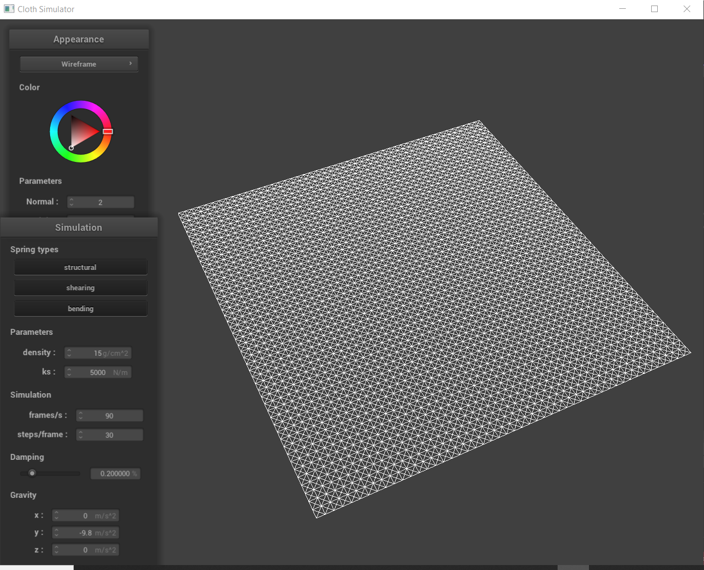
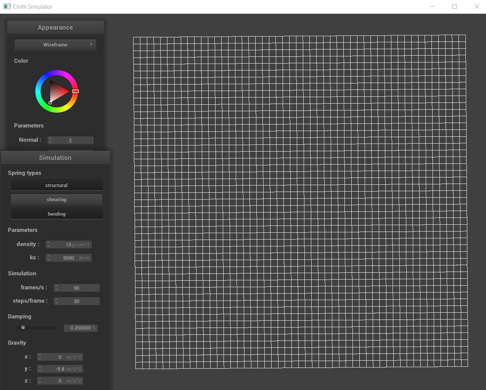
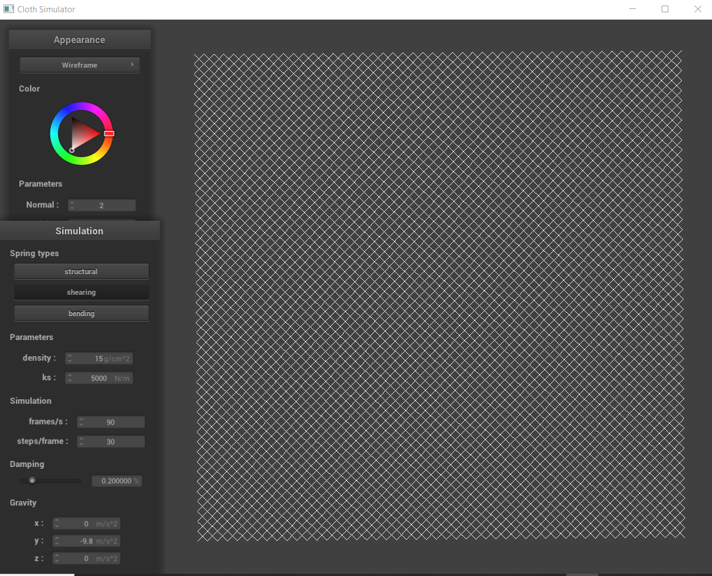
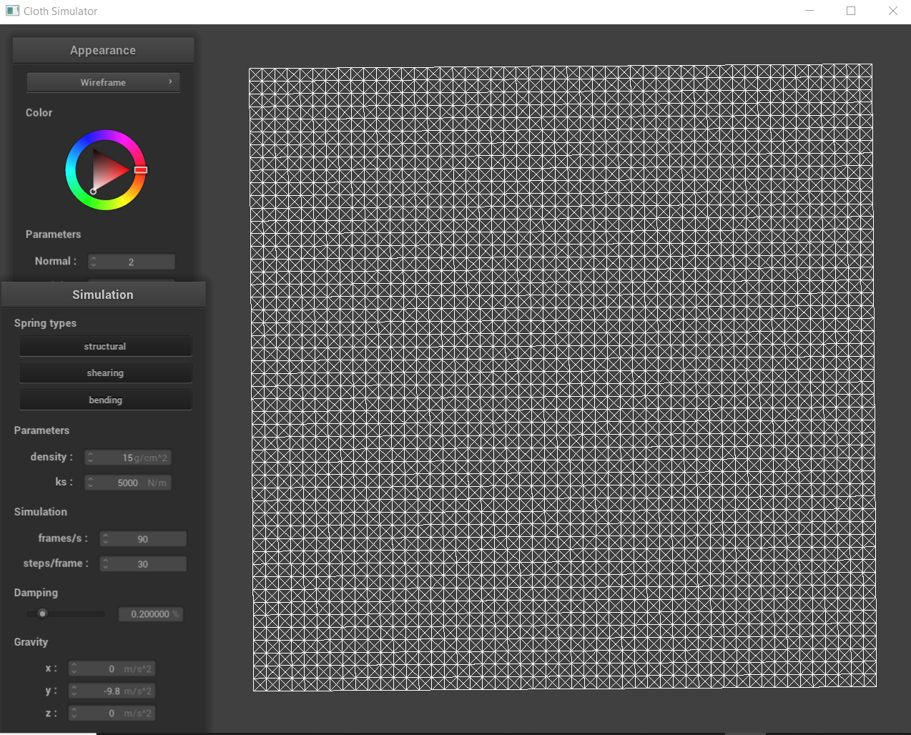

Link to Webpage: https://cal-cs184-student.github.io/sp22-project-webpages-RupaDuggirala/proj4/index.html
Overview
Task 1: Masses and Springs
For this task, we aimed to create a representation of a piece of cloth by crafting an evenly-spaced grid that consists of point masses and springs, each of which was stored in its corresponding vector. Foremost, we conceptualized the cloth as a “plane” in physical space, and utilized parameters like its width, height, orientation to initialize the stand-alone point masses on the plane in row-major order and check if they had been “pinned” onto the cloth. Afterwards, we chose to model different constraints between these point masses through the use of springs. Constraints were added to each point mass from its surrounding neighbors, specifically in accordance with what each type of constraint called for – structural was left and above, bending was the same (albeit at a greater distance), and shearing was to the diagonal upper left and right. Overall, we were able to create a horizontally flat cloth wireframe that included point masses and springs for added functionality.
Here is a screenshot of scene/pinned2.json, taken from a viewing angle where the structure of our point masses and springs are visible.
This is what our wireframe looks like without any shearing constraints:
This is what our wireframe looks like with only shearing constraints:
This is what our wireframe looks like with all of the constraints:
Part 2: Simulation via Numerical Integration
For this task, we were able to implement physical forces of motion to visualize their impact upon the cloth that we created in task 1. This included external forces (like gravity), which would uniformly impact the cloth, and spring correction forces, which would specifically utilize the spring constraints from before to hold the cloth together. Foremost, we computed a total external force by applying the concept of Newton’s 2nd Law to each individual point mass and summing the result. We also had to consider the use of spring correction forces, and utilized Hooke’s law to calculate the force applied to two masses on their ends if a spring constraint was enabled. After calculating the force that is acting upon each point mass, we then utilized Verlet Integration to compute each point mass’ change in position as a result of this total external force upon the cloth. In these calculations, we used the current velocity and current total acceleration from all forces as a function to identify the change in position from a subsequent time step. We also introduced a damping term here to scale down the velocity in order to emulate the loss of energy in a real-life simulation as a result of friction. Ultimately, we constrained the updated point mass’ positions by introducing a correction factor such that the length of the spring between any two point masses is at most 10% of its length at rest. This was to ensure that no extreme shifts in position occurred (especially if the points were pinned), which meant that the cloth would not be stretched indefinitely as all adjacent point masses ended up being relatively close to one another.
At this point, we were able to experiment with various different components within the solution. As a reference (for the subsequent parts), here is a screenshot of scene/pinned2.json with all of the default parameters selected.

The first parameter we experimented with was the spring constant “ks”. This variable influences the “stretchiness” of the springs – a small spring constant means that the springs do not encounter as much resistance and therefore are able to stretch more. On the cloth, we can visualize that this effect collectively allows it to stretch further and be more “elastic” with more folds, thereby creating a minute ripple effect along its surface after the initial bounce following the cloth’s drop. A large spring constant means that the springs encounter much more resistance and are therefore not able to stretch as much. On the cloth, we can visualize that this effect collectively prevents it from stretching as much as before and it appears to be a lot more “stiff” with far fewer folds. The following two screenshots depict this difference, in which the first has a ks of 100 and the next has a ks of 100,000.


The next parameter we experimented with was density. This variable influences the weight of the overall cloth – a small density means that the cloth behaves in accordance with being low in weight. Visually, this translated into the cloth having minimal folds along its surface and it more so appeared to be “floating” in the simulated environment. On the other hand, a large density means that the cloth behaves in accordance with being high in weight. Visually, this translated into the cloth having many folds along its surface and this excess weight seemed to accumulate along its bottom edge due to the presence of gravity. The following two screenshots depict this difference, in which the first has a density of 10 and the next has a density of 100,000.


The final parameter we experimented with was damping. This variable influences the motion of the cloth as it falls, which is specifically caused by the oscillations of the springs that are embedded within it. A small damping factor means that there is not as much resistance, so the springs are compelled to oscillate much more – this means the cloth is more conducive to movement; in fact, it swings multiple times at a faster velocity as it falls downwards from the drop point before it comes to a complete stop. On the other hand, a large damping factor means that there is much more resistance, so the springs are not able to oscillate as much – this means that the cloth is not as conducive to movement; ultimately, it swings less frequently (and even less as the damping factor increases) at a lower velocity as it falls from the drop point. The following two screenshots depict this difference, in which the first has a damping factor of 0.1 and the next has a damping factor of 0.9.


Finally, here is a screenshot of our shaded cloth from scene/pinned4.json in its final resting state, created entirely with the default parameters.

Task 3: Handling Collisions with Other Objects
For this task, we implemented additional functionality to enable the cloth to collide with spheres and planes through an intersection between adjacent surfaces. For spheres, we analyzed the position of a point mass relative to its distance from the origin and radius of the sphere, and “bumped” this position up to the sphere’s surface if it was already contained within the bounds of the sphere. At the tangent point between the two objects, we applied a correction vector that measured the distance between it to the point mass’ previous position, and scaled this value down by friction. For planes, we analyzed the position of a point mass relative to the dot product of it with the normal vector of the plane, as this would indicate if the point’s current and previous position were on different sides of the plane. Once again, we “bumped” this position up to the plane’s surface if it crossed over the bounds of the plane. At this tangent point, we also applied a correction vector similar to the one used before; not only was this scaled down by friction, we also introduced a minimal surface offset to correct any displacement errors that may occur as a result of point-plane intersection. Overall, we were able to ensure that our cloth could interact with external objects (like spheres and planes) through a collision and respond accordingly.
At this point, we were able to experiment with the spring constant parameter “ks” again. From the previous task, we were able to identify that this parameter is related to the “stretchiness” of the springs – that is, a smaller spring constant ensures that the springs are not met with as much resistance and can therefore stretch much more. When a cloth with a lower spring constant collides with a sphere, it stretches much more in a fluid and elastic manner. As a result of the extra folds that are created as a result of this effect, it appears as though a greater percentage of the sphere is covered completely by the cloth. On the other hand, a larger spring constant ensures that the springs are met with much more resistance and are therefore not able to stretch as much. When a cloth with a higher spring constant collides with a sphere, it is not able to stretch as much over the surface of the cloth as it appears to be stiff. As a result of the minimal folds that are created as a result of this effect, it appears as though a smaller percentage of the sphere is covered completely by the cloth. The following three screenshots depict this difference, in which the first has a ks of 500, the next has a ks of 5,000, and the last has a ks of 50,000. This effect can only be mitigated by influencing how the cloth falls onto the sphere, which could potentially be done by adjusting the damping factor (as shown in the previous task).


Finally, here is a screenshot of our shaded cloth lying peacefully at rest on the plane.

This screenshot depicts how we were able to customize the hues within the cloth itself through the use of shaders!

Task 4: Handling Self-Collisions
For this task, we were able to expand the collision functionality that was introduced in the previous task – not only did we want the cloth to collide with external objects (like spheres and planes) and respond accordingly, we also felt it was critical for the cloth to be able to collide with itself. In such “self-collisions”, the cloth should be able to neatly fold or fall on itself instead of merely just cutting through the plane and ignoring its own presence. To implement this additional functionality, we utilized the concept of spatial hashing to map a 3D box volume within the scene (which is represented as float) to a vector that encapsulates all of the point masses that are contained within the 3D box volume. To do this, the position of each individual point mass has to be mapped to a specific 3D box volume, which can be done by segmenting the entire scene into equally-sized 3D boxes. The range of coverage for these boxes is calculated by splitting the width and height of the scene evenly amongst the number of points along each dimension, and these factors are also scaled by a factor of 3 to optimize the overall algorithm. The mappings in this hash table are ultimately utilized to determine if each pair of point masses is a distance that is double the cloth’s thickness apart. A correction vector to ensure that this distance is preserved is calculated for each pair, and the process is repeated for all of the neighboring point masses that surround a particular one (excluding itself). Ultimately, the final correction vector for a single point mass is the average of all of the pairwise correction vectors, scaled down by the number of simulation steps to prevent any sudden position corrections.
At this point, we were able to visualize how the cloth could finally fall and fold onto itself, instead of merely clipping through the plane. The following sequence of screenshots displays how the cloth begins with an early “self-collision” and ends at a restful state on the ground.


The first parameter that we were able to experiment with again was the spring constant “ks”. From the previous tasks, we were able to identify that this parameter is related to the “stretchiness” of the springs – once again, a smaller spring constant reduces the amount of resistance that the springs encounter, which allows them to stretch much further. When a cloth with a lower spring constant collides with itself, it is able to move with more fluidity and elasticity. This effect creates extra folds upon the surface of the cloth, thereby ensuring that it appears to fold and bounce much more (at least from a visual standpoint) before coming to rest. On the other hand, a larger spring constant increases the amount of resistance that the springs encounter, which inhibits the amount that they can fully stretch. When a cloth with a higher spring constant collides with itself, it therefore appears to be more stiff and not as fluid or elastic in nature. This effect minimizes the folds that are created upon the surface of the cloth, thereby ensuring that it appears to bounce at a much lower frequency and retain more of its original shape (from the drop) before coming to rest. The following four screenshots depict this difference, in which the first two have a ks of 500 and the next two have a ks of 50,000.


The next parameter that we were able to experiment with again was the density. From the previous tasks, we were able to identify that this parameter is related to the weight of the overall cloth. A smaller density means that the cloth effectively behaves as if it were lower in weight. When a cloth with a smaller density collides with itself, there are not as many folds along its surface as it falls. The entire process also occurs much more slowly (as an object with less weight does not experience as much gravitational pull) and the folds themselves are much fewer in number and larger in shape. On the other hand, a larger density means that the cloth effectively behaves as if it were greater in weight. When a cloth with a higher density collides with itself, there are many more folds along its surface as it falls. The entire process occurs much more quickly (as an object with more weight experiences a greater gravitational pull) and the folds themselves are larger in number and smaller in shape. The following four screenshots depict this difference, in which the first two have a density of 10 and the next two have a density of 100,000.


Task 5: Shaders
In this task, we implemented shaders. A shader is an isolated program that parallelizes computations on segments of the graphic pipeline within the GPU. Typically, components like geometric attributes (ie. position, normal, uv or color coordinates) or texture files are passed in as input to a shader, and the program will ultimately output a 4D vector. There are two types of shaders in OpenGL – vertex shaders and fragment shaders. The former transform vertices through their geometric properties, and write out the final position of the vertex in addition to other contextual information (ie. color or displacement) to be used within a fragment shader. The latter process geometric attributes of a rasterized fragment that are calculated by a vertex shader to compute and write out the corresponding color to render it. Effectively, a shader program is composed of both of these shaders, in which the output of a vertex shader is the input of the fragment shader. Collectively, these two shaders can be utilized in conjunction to create intriguing lighting and material effects, the scope of which can be determined by the calculations that are performed upon the vertices and fragments within the scene.
Foremost, we implemented the Blinn-Phong shading model. It was introduced as an extension to the Phong model, which approximates lighting within a scene to generate realism. Yet the specular reflections that are generated as a result of this effect are not visible if there is increased radiance over a large area. The Blinn-Phong model addresses this drawback, by measuring the angle between the normal and a “halfway” vector (ie. a unit vector that splits the view and light direction in half). This angle is shorter than the one between the view and reflection vector, so it effectively eliminates the specular “cutoffs” that were previously present and renders the scene in a sharper and more realistic manner. Within this model, we incorporated components from diffuse and ambient light sources and specular highlights within our calculations. The following screenshots visually demonstrate this effect – the first three depict the shader outputting only the ambient, diffuse, and specular components respectively, and the last one displays the entire Blinn-Phong model.


We also implemented a texture mapping shader – the following two screenshots display the use of a custom texture that we sampled from.


We also implemented bump and displacement mapping – in this manner, we were able to extend the functionality of a shader program in which it could process and apply an encoded height map within a texture. The following two screenshots depict bump mapping, both on the cloth and sphere at two consecutive instances during a collision.


The next two screenshots depict displacement mapping, again both on the cloth and sphere at two consecutive instances during a collision.


To implement bump mapping, we calculated the displaced world space normal vectors of an object through the use of a tangent-bitangent-normal matrix. This was utilized in order to craft an illusion of lighting detail (ie. the texture that is akin to bump maps) upon its surface through the fragment shader. To implement displacement mapping, we calculated the displaced positions of the vertices in the direction of the model space vertex normal, through the use of a vertex shader on top of a complementary fragment one. This had the effect of modifying the geometrical delineation of the object. From the four previous renders, we can visualize the difference between bump and displacement mapping – the former merely alters the surface of the cloth and sphere through the use of a bump map, which means that the resulting texture is rendered in crisp detail and appears to be “sharp”; while the latter also alters the vertex positions of the cloth and sphere, which means that the resulting texture is also subsequently displaced and it appears to be more “smooth”. Otherwise, the lighting effects for both mapping styles are relatively consistent.
Finally, we can modify the coarseness of the sphere’s mesh. The following four screenshots visually depict the change in this parameter – the first two display the sphere with bump and then displacement mapping at a coarseness factor of 16, and the next two display the sphere with bump and displacement mapping at a coarseness factor of 128.


From these screenshots, we can see the visual impact in rendering the scene artifacts when the coarseness factor is modified. At a low coarseness factor of 16, the bump and displacement mapping textures look to be relatively similar upon the surface of the sphere or cloth. When the coarseness factor is increased to 128, there appears to be no striking difference (as compared with the previous texture) for the image with bump mapping; both textures are rendered in crisp detail. However, in the image with displacement mapping, we can observe that the effect of the displaced vertex positions is not as magnified, and this appears to create an artifact that is more cohesive and smooth yet also inherently “sharp”.